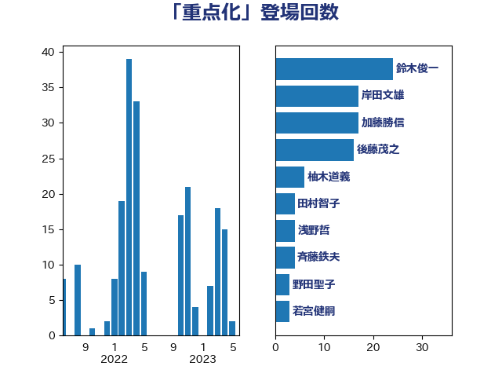

単語「重点化」

| 鈴木俊一 | 自由民主党 | 24 回 |
| 岸田文雄 | 自由民主党 | 17 回 |
| 加藤勝信 | 自由民主党 | 17 回 |
| 後藤茂之 | 自由民主党 | 16 回 |
| 柚木道義 | 立憲民主党 | 6 回 |
| 田村智子 | 日本共産党 | 4 回 |
| 浅野哲 | 国民民主党 | 4 回 |
| 斉藤鉄夫 | 公明党 | 4 回 |
| 野田聖子 | 自由民主党 | 3 回 |
| 若宮健嗣 | 自由民主党 | 3 回 |
| 柳ヶ瀬裕文 | 日本維新の会 | 3 回 |
| 岡田直樹 | 自由民主党 | 3 回 |
| 中島克仁 | 立憲民主党 | 3 回 |
| おおつき紅葉 | 立憲民主党 | 3 回 |
| 高階恵美子 | 自由民主党 | 2 回 |
| 西岡秀子 | 国民民主党 | 2 回 |
| 早稲田ゆき | 立憲民主党 | 2 回 |
| 小西洋之 | 立憲民主党 | 2 回 |
| 塩川鉄也 | 日本共産党 | 2 回 |
| 黄川田仁志 | 自由民主党 | 1 回 |
| 麻生太郎 | 自由民主党 | 1 回 |
| 高橋千鶴子 | 日本共産党 | 1 回 |
| 赤澤亮正 | 自由民主党 | 1 回 |
| 西銘恒三郎 | 自由民主党 | 1 回 |
| 西村康稔 | 自由民主党 | 1 回 |
| 若松謙維 | 公明党 | 1 回 |
| 窪田哲也 | 公明党 | 1 回 |
| 秋野公造 | 公明党 | 1 回 |
| 福島伸享 | 無所属 | 1 回 |
| 石井苗子 | 日本維新の会 | 1 回 |
| 田村憲久 | 自由民主党 | 1 回 |
| 猪口邦子 | 自由民主党 | 1 回 |
| 片山さつき | 自由民主党 | 1 回 |
| 永岡桂子 | 自由民主党 | 1 回 |
| 柴田巧 | 日本維新の会 | 1 回 |
| 林芳正 | 自由民主党 | 1 回 |
| 松野博一 | 自由民主党 | 1 回 |
| 杉久武 | 公明党 | 1 回 |
| 本田顕子 | 自由民主党 | 1 回 |
| 末松信介 | 自由民主党 | 1 回 |
| 広瀬めぐみ | 自由民主党 | 1 回 |
| 川田龍平 | 立憲民主党 | 1 回 |
| 岩渕友 | 日本共産党 | 1 回 |
| 山際大志郎 | 自由民主党 | 1 回 |
| 山井和則 | 立憲民主党 | 1 回 |
| 小野泰輔 | 日本維新の会 | 1 回 |
| 小沢雅仁 | 立憲民主党 | 1 回 |
| 小倉將信 | 自由民主党 | 1 回 |
| 寺田稔 | 自由民主党 | 1 回 |
| 宮本岳志 | 日本共産党 | 1 回 |
| 室井邦彦 | 日本維新の会 | 1 回 |
| 堀井巌 | 自由民主党 | 1 回 |
| 城井崇 | 立憲民主党 | 1 回 |
| 國重徹 | 公明党 | 1 回 |
| 古賀友一郎 | 自由民主党 | 1 回 |
| 古川禎久 | 自由民主党 | 1 回 |
| 伊佐進一 | 公明党 | 1 回 |
| 中司宏 | 日本維新の会 | 1 回 |
| 上田英俊 | 自由民主党 | 1 回 |
| 上田清司 | 国民民主党 | 1 回 |
| 上月良祐 | 自由民主党 | 1 回 |
| 上川陽子 | 自由民主党 | 1 回 |